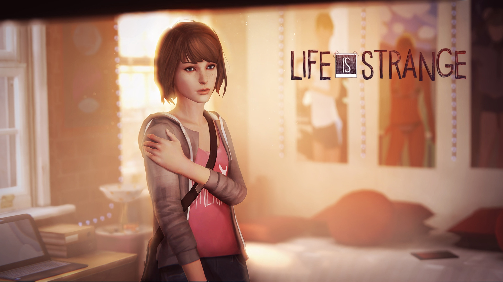
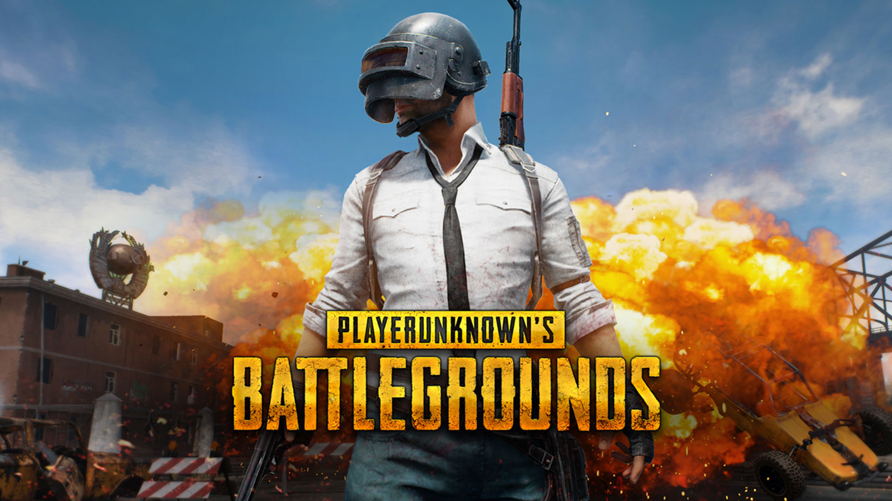
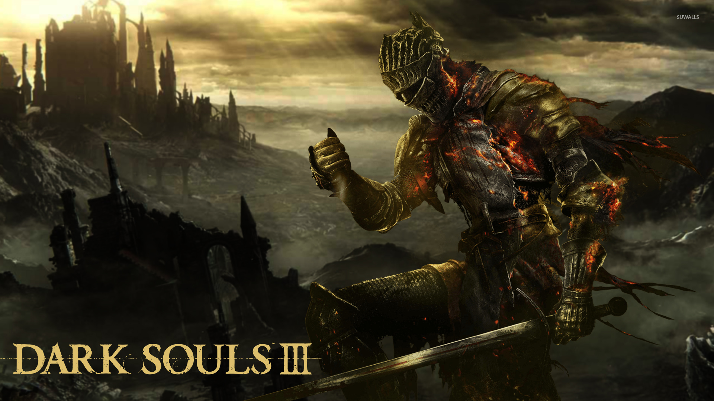
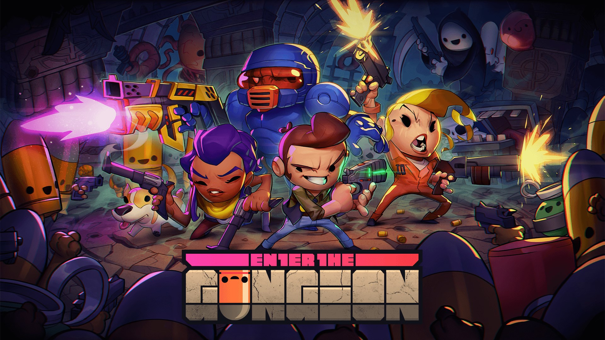
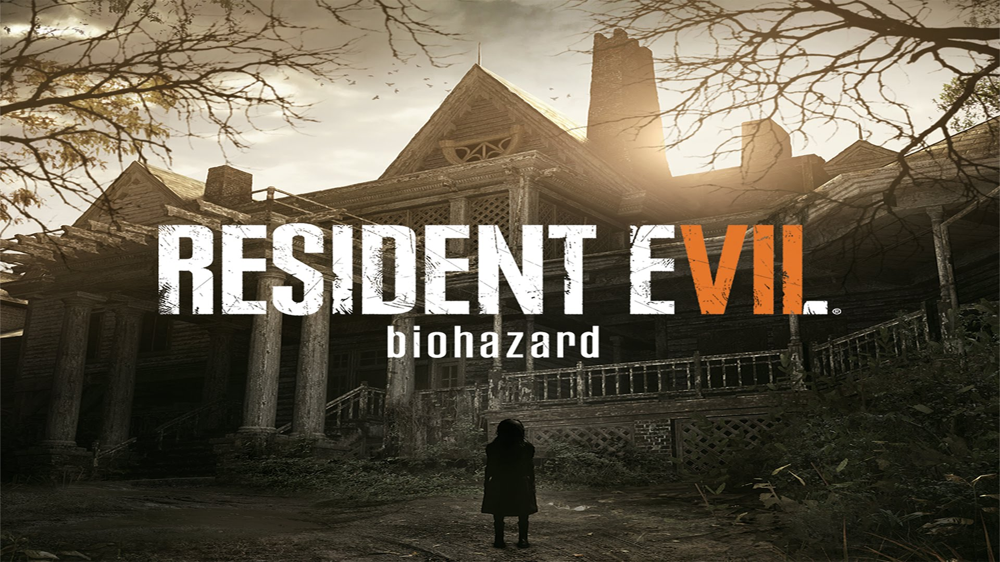
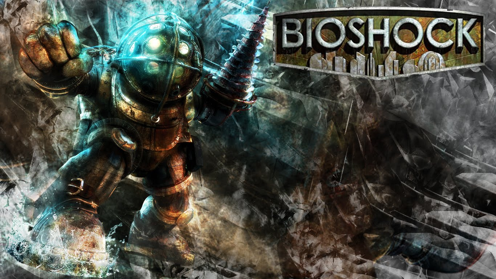
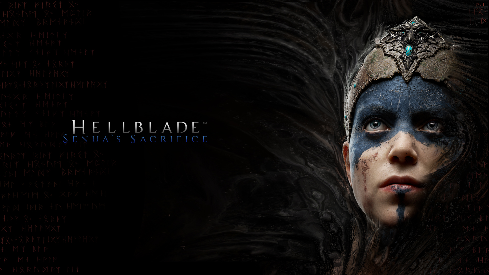
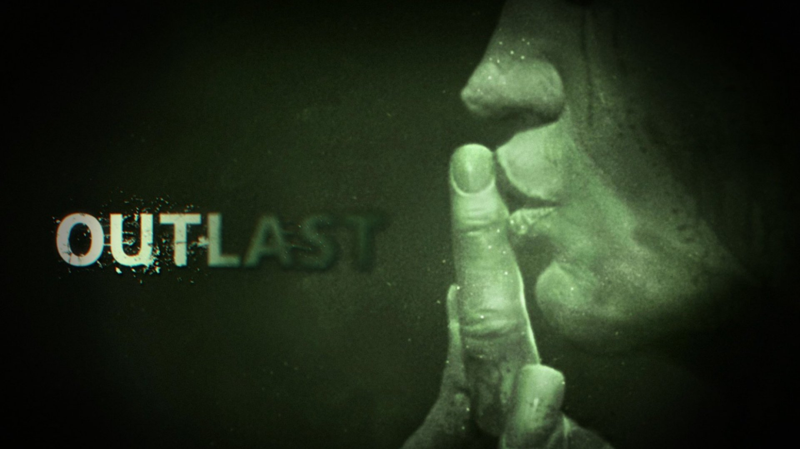
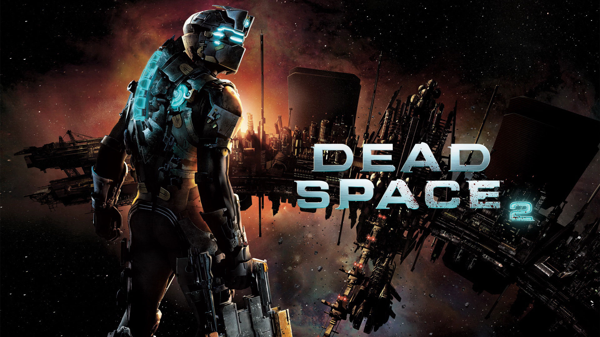

Life is Strange
Genre(s):Graphic adventure
The game's plot focuses on Max Caulfield, an 18-year-old photography student who discovers that she has the ability to rewind time at any moment, leading her every choice to enact the butterfly effect. The player's actions will adjust the narrative as it unfolds, and reshape it once allowed to travel back in time.
(9.5/10)
|

Player Unknown Battlegrounds
Genre(s):Battle Royale, FPS
Player Unknown Battlegrounds (PUBG) is a multiplayer online battle royale game developed and published by PUBG Corporation, a subsidiary of Korean publisher Bluehole. In the game, up to one hundred players parachute onto an island and scavenge for weapons and equipment to kill others while avoiding getting killed themselves. The available safe area of the game's map decreases in size over time, directing surviving players into tighter areas to force encounters. The last player or team standing wins the round.
(9.7/10)
|

Darksouls III
Genre(s):Action role-playing
Darksouls III is an action role-playing game played in a third-person perspective, similar to previous games in the series. Throughout the game, players encounter different types of enemies, each with different behaviors. Some of them change their combat pattern during battles.The game places more focus on role-playing, in which the character builder is expanded and weapons are improved to provide more tactical options to players.
(9.3/10)
|

Enter The Guneon
Genre(s): Bullet hell, Roguelike
Enter the Gungeon is a fast-paced bullet hell shooter with roguelike elements. While the player descends the Gungeon, they are set to go through multiple floors, each with a random number of rooms in it. Each room contains a set of enemies, which vary in strength, endurance, and attack behaviour, where the attack can range from simple, straightforward shots to a complicated mixture of shots fired at the same time.
(8.5/10)
|

Resident Evil 7
Genre(s):Survival horror, First-person Shooter
The player controls the protagonist, Ethan Winters, from a first-person perspective. Although Ethan is a civilian who offers few combat skills, he is able to arm himself with a variety of different weapons including handguns, shotguns, flamethrowers, explosives and chainsaws against the Baker family, and a humanoid form of fungus known as the "Molded".
(9.5/10)
|

Bioshock 1
Genre(s):First-person shooter
BioShock is set in 1960. The player guides the protagonist, Jack, after his airplane crashes in the ocean near the bathysphere terminus that leads to the underwater city of Rapture. Built by the business magnate Andrew Ryan, the city was intended to be an isolated utopia, but the discovery of ADAM, a genetic material which can be used to grant superhuman powers, initiated the city's turbulent decline. Jack tries to find a way to escape, fighting through hordes of ADAM-obsessed enemies, and the iconic, deadly Big Daddies, while engaging with the few sane humans that remain and eventually learning of Rapture's past.
(9.4/10)
|

Hellblade Senua's Sacrifice
Genre(s):Action-adventure
Hellblade: Senua's Sacrifice is divided in two types of gameplay: the first allows Senua to walk freely and interact with her surroundings. Those parts focus on either story via voiceover, as Senua travels from one location to another, or the resolution of a puzzle or challenge of some kind to progress further. She can use a capacity known as "focus", in reference to her tendency to see things differently from other people due to her condition, to trigger puzzle-related events.
(9.6/10)
|

Outlast
Genre(s):Survival Horror
In Outlast, the player assumes the role of investigative journalist Miles Upshur, as he navigates a dilapidated psychiatric hospital overrun by homicidal patients. The game is played from a first-person perspective and features some stealth gameplay mechanics. The player can walk, run, crouch, jump, and climb over objects. Unlike most games however, the player is unable to attack enemies, and instead must rely on stealth tactics such as hiding in lockers, sneaking past enemies, staying in the shadows and hiding behind crates and barrels or under beds and tables in order to survive.
(9.6/10)
|

Dead Space
Genre(s):Survival horror, FPS
The player controls Isaac Clarke from a third-person perspective, looking over the character's right shoulder. As in the previous game, the game uses the Resource Integration Gear (RIG) suit, an in-world heads-up display (HUD) system that uses holograms projected from Isaac's suit and weapons to show information such as messages and ammunition count Much like in the first game, Isaac must fight the Necromorphs, organisms that mutate and take control of human corpses. To take down Necromorphs, the player must use "strategic dismemberment": in other words, slicing off limbs or sections of the Necromorphs' bodies. For example, shooting a Slasher Necromorph in the head will, like many other types, have little effect; however, it can be stopped by shooting its bladed arms off
(9.5/10)
|